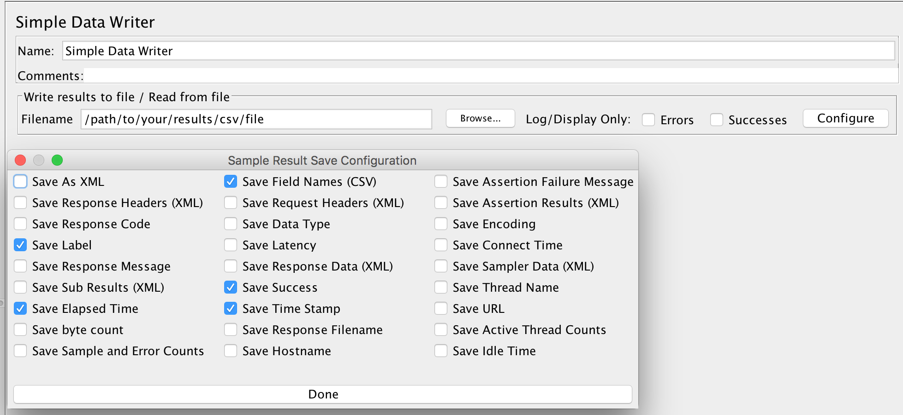

In order to run Lightning, you need to configure your JMeter tests to produce output in CSV format with relevant
columns. Following columns must be included: timeStamp, elapsed, label,
success. Depending on how you run JMeter tests, this can be configured in a number of ways.
JMeter non-GUI mode
If you run JMeter from command-line in non-GUI mode, include following configuration in additional jmeter.properties file:
jmeter.save.saveservice.output_format=csv
jmeter.save.saveservice.print_field_names=true
jmeter.save.saveservice.successful=true
jmeter.save.saveservice.label=true
jmeter.save.saveservice.time=truePoint at this file when running JMeter in non-GUI mode:
./jmeter.sh -n -t path/to/your/jmx/file -q path/to/above/jmeter.properties -l path/to/results/csv/fileJMeter Maven Plugin
If you run JMeter tests using JMeter Maven Plugin, include following configuration in your pom.xml.
<configuration>
<resultsFileFormat>csv</resultsFileFormat>
<propertiesJMeter>
<jmeter.save.saveservice.print_field_names>true</jmeter.save.saveservice.print_field_names>
<jmeter.save.saveservice.successful>true</jmeter.save.saveservice.successful>
<jmeter.save.saveservice.label>true</jmeter.save.saveservice.label>
<jmeter.save.saveservice.time>true</jmeter.save.saveservice.time>
</propertiesJMeter>
</configuration>
Check JMeter Maven Plugin Wiki for more configuration options.
Simple Data Writer
If you can't switch to CSV results format because you still need XML for any reason, you can keep existing config
unchanged. Instead of changing any properties, add a Simple Data Writer listener to your JMeter
tests:

This way you can save results to CSV for Lightning analysis and keep XML results for any other purposes.